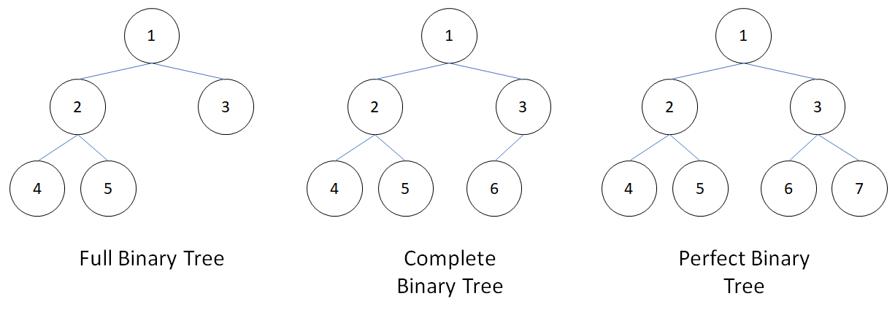

樹 (Tree)
樹是一張沒有環且連通的圖，有許多算法都是由樹發展出來。
特性
- 。
- 沒有環，但加上一條邊會形成環。
- 任意兩個點之間存在唯一路徑。
- 為連通圖，但拔掉一條邊即為不連通。

術語
- 根 (root)：樹的一個代表性的點，通常會被當遍歷的起點，有給定根點的樹叫 有根樹，反之為無根樹。無根樹有時依照題目需求，需要隨機找一個點當根。
- 葉節點 (leaf)：度數 的節點。
- 距離 (distance)：為兩個點所形成路徑之邊數，或是路徑上權重之和。
-
父節點 (parent)、子節點 (child：有根樹中，兩個相連的節點，較接近樹根的為父節點，另一個為子節點。
-
祖先 (ancestor)：有根樹中，節點到根結點中，所有的節點皆為祖先。依題目所需，有時自己也是自己的祖先（尤其是根最常這樣定義）。
-
兄弟 (siblings)：相同父親的節點。
-
後代 (descendant)：所有視自己為祖先的點（不包含自己）。
-

- 深度 (depth)：有根樹中，節點到根結點之距離。
- 高度 (height)：有根樹中，節點到與它距離最大的葉節點的距離稱為高度。根的高度稱為這整顆樹的高度。
- 子樹 (subtree)：如果 為 的子樹，則 ， 。
- 森林 (Forest)：由無數個互不連通的樹所形的圖為森林。
二元樹
-
元樹：每個節點最多有 個子節點，稱為 元樹。
-
最常見是二元樹，二元樹兩個子節點分別稱為左子節點 (left node) 及右子節點 (right node)，請見資料結構的 二元搜尋樹 和 推 。
-
特殊二元樹
- Full Binary Tree：除葉節點外，每個節點都有兩個子節點。
- Complete Binary Tree：每層節點全滿，除了最後一層，最後一層節點靠左。
- Perfect Binary Tree：每層節點全滿，perfect binary tree 也是 full binary tree 和 complete binary tree。

儲存
樹也是一種圖，也可以用 Adjacency Matrix 或 Adjacency List，每個點記錄自己的父節點和子節點，也可以只記錄其一，只有紀錄父節點的樹，可以用一維陣列儲存。
1 | |
二元樹最多只有兩個節點（左子節點和右子節點），可以開一個長度為 的二維陣列，或兩個長度為 的一維陣列。
1 2 3 | |
Complete Binary Tree 可用一維陣列儲存，將 Complete Binary Tree 的節點從上到下，從左到右依序編號，根節點為 或 ：
-
當根為 時，左子節點是 ，右子節點是

-
當根為 時，左子節點是 ，右子節點是

還有一些樹的儲存涉及指標，以下為常見種類，這裡不提如何實作：
- 二元搜尋（平衡）樹
- 樹的旋轉
- 線段樹及相關可支援區間查詢的樹
- 區間刪除
- 區間搬移